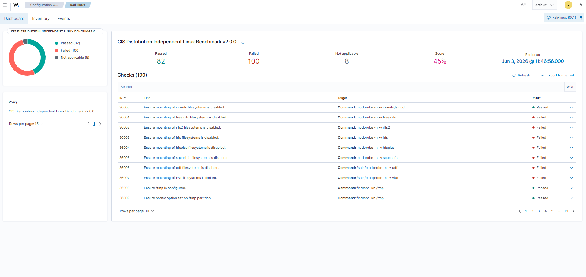

Case Técnico • SIEM • Blue Team
Wazuh SIEM/XDR
Implementação de um laboratório completo de monitoramento e detecção de ameaças utilizando Ubuntu Server, VMware Workstation e Kali Linux, com foco em SIEM, análise de eventos, agentes, hardening e Blue Team.
LinuxVMwareWazuh
SIEMBlue TeamMonitoramento
Topologia
Fluxo do laboratório
Dell OptiPlex
↓
Windows 11
↓
VMware Workstation
↓
Ubuntu Server
↓
Wazuh SIEM/XDR
↕
Kali Linux Agent
Índice
Navegue pelo projeto.
Resumo do case
Laboratório SIEM/XDR implementado em ambiente virtualizado.
O objetivo deste projeto foi criar um ambiente prático para compreender a implantação de um SIEM, integração de agentes, coleta de eventos, validação de serviços, análise de segurança e documentação técnica.
Especificações do laboratório
Ambiente técnico utilizado no projeto.
Host físico
Dell OptiPlex com Windows 11, Intel Core i7-10700T, 32 GB RAM e SSD NVMe de 1 TB.
Windows 11i7-10700T32 GB RAM
Hypervisor
VMware Workstation utilizado para criação, isolamento e gerenciamento das máquinas virtuais.
VMwareVirtualizaçãoLab
Servidor Wazuh
Ubuntu Server executando Wazuh Manager, Dashboard, Indexer e Filebeat.
Ubuntu ServerWazuhSIEM
Endpoint
Kali Linux com agente Wazuh instalado, registrado e integrado ao servidor principal.
Kali LinuxAgentMonitoring
Processo de implementação
Do planejamento à validação do laboratório.
1
Planejamento
Definição da arquitetura
Organização do ambiente com host físico, VMware Workstation, Ubuntu Server como servidor Wazuh e Kali Linux como endpoint monitorado.
2
Instalação
Implantação do Wazuh
Instalação dos componentes principais: Wazuh Manager, Dashboard, Indexer e Filebeat no Ubuntu Server.
3
Integração
Registro do agente Kali Linux
Instalação e configuração do agente Wazuh no Kali Linux, com validação de comunicação entre endpoint e servidor.
4
Validação
Testes e evidências
Verificação dos serviços, dashboard, agentes, eventos coletados e análise SCA para confirmar o funcionamento do laboratório.
Arquitetura
Ambiente do laboratório.
O laboratório foi implementado em ambiente virtualizado utilizando VMware Workstation, com um servidor Ubuntu para os componentes centrais do Wazuh e uma máquina Kali Linux atuando como endpoint monitorado.
Host
Dell OptiPlex com Windows 11, Intel Core i7-10700T, 32 GB de RAM e SSD NVMe de 1 TB utilizado como base para virtualização.
Hypervisor
VMware Workstation utilizado para criação, isolamento e gerenciamento das máquinas virtuais do laboratório.
Ubuntu Server
Servidor principal executando Wazuh Manager, Dashboard, Indexer e Filebeat.
Kali Linux
Endpoint monitorado com agente Wazuh instalado, registrado e integrado ao servidor.
Ver laboratório Kali →Stack
Tecnologias utilizadas no case.
Competências demonstradas
Capacidades técnicas evidenciadas neste projeto.
Além da implementação do laboratório, este projeto demonstra competências práticas desenvolvidas durante todo o processo de planejamento, configuração, validação e documentação do ambiente.
Linux Administration
Administração do Ubuntu Server e Kali Linux via terminal: gerenciamento de serviços com systemctl, controle de permissões, análise de logs do sistema e troubleshooting de processos em execução.
Virtualização
Criação e gerenciamento de múltiplas VMs no VMware Workstation, configuração de redes virtuais, isolamento de ambientes e integração entre máquinas para construção do laboratório SIEM.
SIEM
Implantação completa do Wazuh: instalação do Manager, Dashboard, Indexer e Filebeat no Ubuntu Server, configuração de coleta de eventos, análise SCA e correlação de alertas de segurança.
Blue Team
Monitoramento contínuo de endpoints, análise de eventos de segurança no dashboard Wazuh, interpretação de alertas, validação de integridade de arquivos e visão defensiva do ambiente.
Redes
Configuração de comunicação TCP entre agente e servidor na porta 1514, validação de conectividade com ping e nmap, diagnóstico de falhas de conexão e ajuste de endereços IP no ambiente virtual.
Troubleshooting
Diagnóstico de falhas na comunicação do agente, resolução de conflitos de sessão no XRDP, validação de serviços via systemctl status e análise de logs do ossec.log para identificar erros.
Log Analysis
Coleta e interpretação de eventos no formato JSON via eve.json do Suricata, análise de alertas gerados pelo Wazuh, leitura de logs de autenticação e validação de regras customizadas com wazuh-logtest.
Documentação Técnica
Registro completo da arquitetura do laboratório, passo a passo de implementação, evidências em screenshots, desafios encontrados, soluções aplicadas e aprendizados documentados no portfólio.
Resultados do projeto
O que foi entregue neste laboratório.
Este case resultou em um ambiente funcional de monitoramento, com servidor SIEM, endpoint integrado, coleta de eventos, validações técnicas e documentação publicada.
01Servidor Ubuntu
01Endpoint Kali integrado
01Plataforma SIEM/XDR
05Evidências documentadas
Evidências
Resultados obtidos durante a implementação.
Abaixo estão evidências reais do laboratório Wazuh SIEM/XDR, demonstrando a implementação do ambiente, a integração dos componentes e o funcionamento da plataforma de monitoramento.



Desafios
Problemas encontrados e soluções aplicadas.
Dashboard
Diagnóstico e validação dos serviços do Wazuh até a disponibilização correta da interface web.
Comunicação do agente
Ajustes na configuração e validação da conexão entre servidor e endpoint monitorado.
Acesso remoto
Configuração do XRDP e ambiente gráfico para administração remota do Kali Linux.
Troubleshooting
Verificação de serviços, conectividade, status dos agentes e validação dos componentes do ambiente.
Conclusão
Resultado do laboratório.
Este laboratório consolidou conhecimentos práticos em SIEM, Linux, virtualização, agentes de monitoramento, análise de eventos, troubleshooting e documentação técnica.
O projeto demonstra minha capacidade de implementar, documentar e validar um ambiente real de monitoramento utilizando tecnologias empregadas em operações de Segurança da Informação.